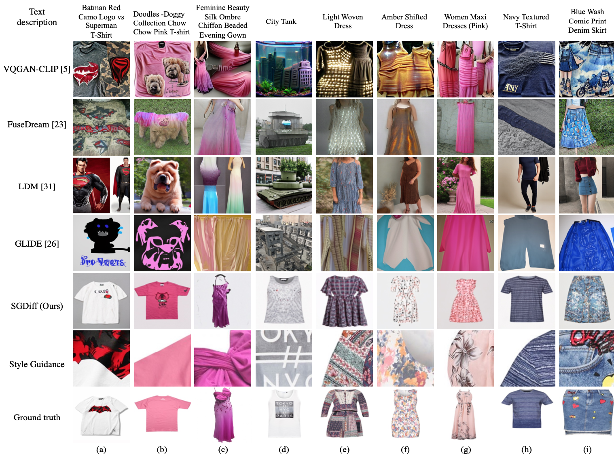
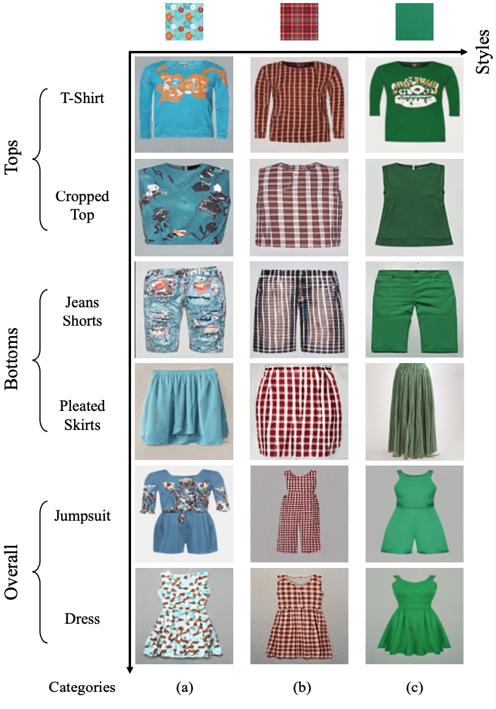
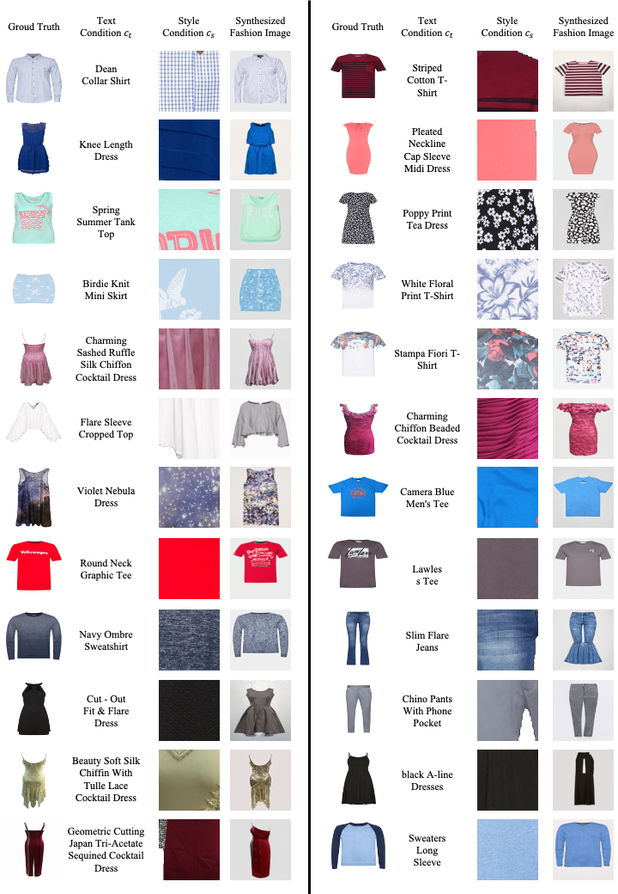
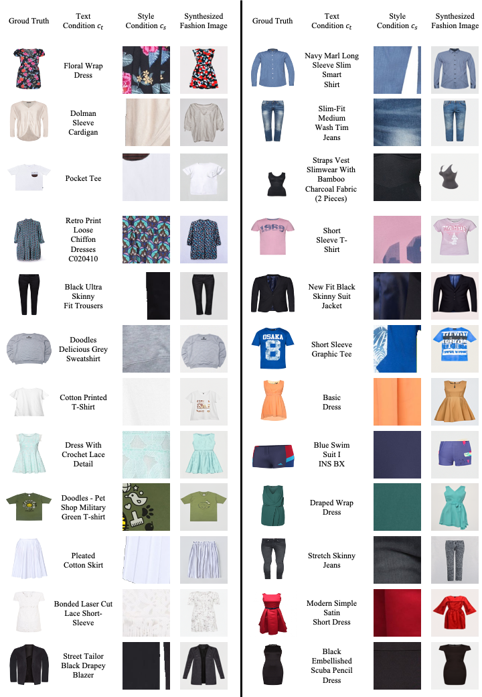
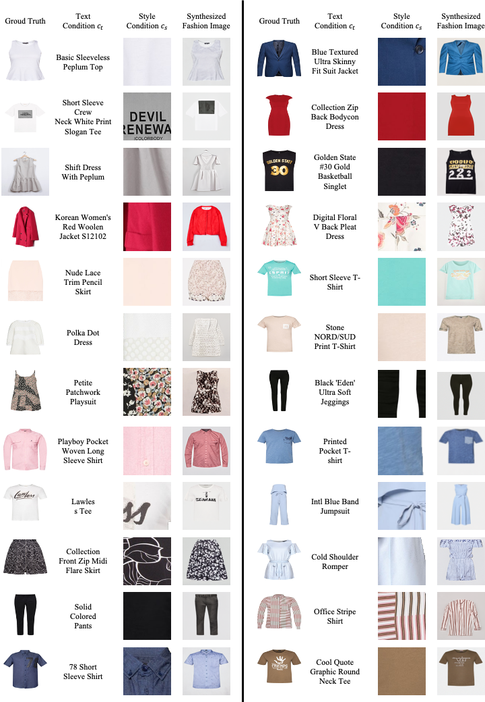

The Hong Kong Polytechnic University
Hong Kong SAR, China
zhengwt.sun@connect.polyu.hk
The Hong Kong Polytechnic University
Hong Kong SAR, China
yanghong.zhou@connect.polyu.hk
The Hong Kong Polytechnic University
Hong Kong SAR, China
honghongvicky.he@connect.polyu.hk
The Hong Kong Polytechnic University
Hong Kong SAR, China
tracy.mok@polyu.edu.hk
Abstract

This paper reports on the development of a novel style guided diffusion model (SGDiff) which overcomes certain weaknesses inherent in existing models for image synthesis. The proposed SGDiff combines image modality with a pretrained text-to-image diffusion model to facilitate creative fashion image synthesis. It addresses the limitations of text-to-image diffusion models by incorporating supplementary style guidance, substantially reducing training costs, and overcoming the difficulties of controlling synthesized styles with text-only inputs. This paper also introduces a new dataset -- SG-Fashion, specifically designed for fashion image synthesis applications, offering high-resolution images and an extensive range of garment categories. By means of comprehensive ablation study, we examine the application of classifier-free guidance to a variety of conditions and validate the effectiveness of the proposed model for generating fashion images of the desired categories, product attributes, and styles. The contributions of this paper include a novel classifier-free guidance method for multi-modal feature fusion, a comprehensive dataset for fashion image synthesis application, a thorough investigation on conditioned text-to-image synthesis, and valuable insights for future research in the text-to-image synthesis domain. The code and dataset will be released once the paper is published.
More Results
Unlike many existing methods that rely solely on text descriptions to generate images, our SGDiff approach leverages style images to guide texture synthesis in the resulting images. This technique allows SGDiff to closely replicate the textures found in the ground truth images, resulting in significantly improved visual similarity and coherence. This feature establishes our approach as a more effective solution for generating textured images that closely resemble the desired output.
Our SGDiff is capable of synthesizing a wide variety of fashion garments, even when provided with style images that fall outside the training distribution. This demonstrates the model's adaptability and versatility in handling diverse and previously unseen styles.
Here are more supplementary results:
  